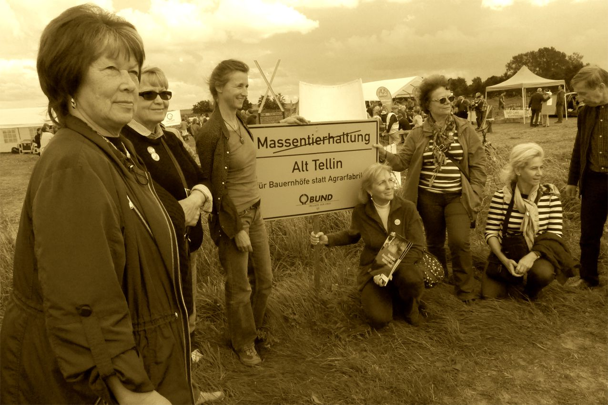

Gemeinde

Ohne Wille kein Weg
Am 22.09.2015 war die letzte Gemeinderatsversammlung. Wie immer wurde die Sitzung sehr kurzfristig bekanntgegeben und wer nicht regelmäßig in den Gemeindeschaukasten seines Dorfes blickt, erfährt es womöglich gar nicht. Das wirkt im Zeitalter von Internet und E-Mail, wie ein Relikt aus grauer Vorzeit. Demokratische Bürgerbeteiligung ist so nicht planbar und deswegen auch oft nicht machbar. Vorschläge: Auf der Internetseite des Amtes Jarmen Tutow, wo sich unter „Gemeinde Alt Tellin“ heute noch die Einladung zu einem Fotowettbewerb aus dem Jahr 2011 befindet, werden Bürgerinnen und Bürger rechtzeitig über Termin und Tagesordnungspunkte der nächsten Gemeinderatssitzung informiert. Die Gemeindevertreter einigen sich schon zu Jahresbeginn auf die Sitzungstermine und geben sie bekannt. Am 22.09. waren nun viele Bürgerinnen und Bürger zur Einwohnerfragestunde erschienen. Es gab viele Fragen und Anregungen. Das Spektrum reichte von einer Baumpflanzung im Rahmen des Apfelfestes in Hohenbüssow bis zur Zerstörung der Gehwege durch Lastwägen und Landmaschinen in Alt-Tellin. Bevor ich dann mit meinen Fragen an die Reihe kam, machte sich auf Seiten der Gemeindevertretung Unmut laut. „Sonst wären es ja auch immer nur zwei oder drei Fragen gewesen“ „Das dauere ja zu lange“ Ich war sehr erstaunt über dieses unhöfliche Gemurmel und es war mir unangenehm in diese Stimmung hinein meine Fragen zu stellen. Der Gemeinderat vertritt die Interessen und Angelegenheiten von uns allen. Wenn kein wirkliches Interesse besteht zu erfahren, was den Bürgerinnen und Bürgern am Herzen liegt, frage ich mich, weshalb sich jemand überhaupt in dieses Gremium wählen lässt. Dass es auch anders gehen kann zeigt ein Blick in die Gemeinde Grischow, die zum benachbarten Amt Treptower Tollensewinkel gehört. Einwohner und Einwohnerinnen von Grischow finden nicht wie wir einen Fotowettbewerb von 2011, wenn sie die Internetseite Ihrer Gemeinde aufrufen. Sie finden dort die Satzung ihrer Gemeinde und den aktuellen Haushaltsplan. Dort stehen die Kontaktdaten des Bürgermeisters um z.B. Gesprächstermine zu vereinbaren. Die Protokolle vergangener Gemeinderatssitzungen und auch die Fragen, die bei der Einwohnerfragestunde gestellt wurden, können dort nachgelesen werden. Jede und jeder Interessierte erfährt dort auch, frühzeitig, den Termin der nächsten Gemeindvertreterversammlung. Grischow ist auf der Höhe der Zeit. Alt Tellin scheinbar hinterm Mond. Ich will dass sich das ändert. Ich will keine Revolution. Ich will Demokratie.Liebe Grüße, Susanne Wiest
Tollensetaler Stimme 2015/10, S. 2Ja, es wurde gewählt
Das Bürgerbündnis „Landleben Tollensetal erhielt diesmal die meisten Wählerstimmen. Wer hätte das gedacht? Herzlichen Glückwunsch! Aber was hat sich verändert in der Zusammensetzung der Alt Telliner Gemeindevertretung? Nichts, denn alles blieb beim Alten. Der Gemeindewahlausschuss hat am 27. Mai 2014 das endgültige Wahlergebnis in der Gemeinde Alt Tellin festgestellt. Das bekanntgegebene Ergebnis der Sitzverteilung irritiert und befremdet unsere Einwohner. Wenn nach der Wahl alle beteiligten Wahlvorschläge die gleiche Sitzzahl zugeteilt bekommen, obwohl der Wahlsieger gut ein Drittel mehr Stimmen als die Letztplazierten hat, dann sollte das in unserem Land angewandte Sitzzuteilungsverfahren hinterfragt werden. Das in MV angewandte Sitzzuteilungsverfahren mag auf Landtags- und Kreistagsebene seine Berechtigung haben, aber es führt bei kleinen Gemeinden mit nur 6 Gemeindevertretersitzen zu einer Verfälschung des Wählerwillens in nicht akzeptabler Größenordnung. Wenn trotz einer Spitzenwahlbeteiligung von 73,73% der kundgetane Wählerwille sich nicht in der Sitzverteilung widerspiegelt, warum soll dann noch zur Wahl gegangen werden? Es muss ein anderes Sitzzuteilungsverfahren für kleine Gemeinden gefunden werden, dass den Wählerwillen nicht verfälscht. So eine Änderung kann aber ausschließlich durch die Legislative, also den Landtag MV erfolgen. Eine Petition an den entsprechenden Landtagsausschuss wäre ein möglicher Weg. Ob unsere Gemeindevertretung das tun will, ist zu bezweifeln. Denn Kraft ihrer Wassersuppe haben sie schon gezeigt, dass keine Veränderung erwünscht ist. Die Wahlverlierer haben nicht nur alle stellvertretenden Bürgermeisterposten besetzt, sondern auch der Gemeindeentwicklungsausschuss wird nach wie vor vom gleichen berufenem Bürger geleitet, zum Vorteil der hier praktizierten bedenklichen Landespolitik. Welch ein Glück für die außerparlamentarische Opposition. So kann sie sich weiter entfalten. Die Reise ins Ungewisse ist noch nicht zu Ende.Poeten gegen den Strom
Demografischer Wandel auch am Tollensetal?
Auch unsere Einwohnerzahl sinkt inzwischen. Die Zeiten, in denen der Zuzug junger Menschen den Einwohnerrückgang aufhielt, sind vorbei. Am 11.Juli feierten die Buchholzer ihre 75 jährige Siedlungsgeschichte. Heute aber gibt es keine „Deutsche Gesellschaft für innere Kolonisation“ mehr. Der Bundesbeauftragte für die neuen Länder hat eine Studie zur Bevölkerungsentwicklung in Auftrag gegeben (unter besonderer Berücksichtigung der Neuen Länder). Sie schlägt einen neuen Umgang mit nicht förderbaren („verlorenen“) Räumen vor: „Verlorene Räume sind Regionen, in denen sich keine Innovatoren finden, die versuchen, Zukunft zu schaffen. Es habe sich aber in den letzten fast 20 Jahren Aufbau Ost... herausgestellt, dass sich Förderung kaum von oben nach unten organisieren lässt... Wenn die Menschen fehlen, die das Schicksal ihrer Heimat in die Hand nehmen, lässt sich auch durch hohen Mitteleinsatz kaum etwas ausrichten... Gerade in solchen abgekoppelten Regionen ist es wichtig, entgegen der bisherigen Praxis der Öffentlichkeit klar zu sagen, dass die grundgesetzlich festgelegte „Gleichwertigkeit der Lebensverhältnisse“ nicht mehr gewährleistet werden kann. Das hilft einerseits, eine passive, abwartende Anspruchshaltung unter der Bevölkerung abzubauen. Zum anderen vermag ein solches Label geradezu Menschen anzuziehen, die Einsamkeit und Abgelegenheit suchen. In jedem Fall ist es auch hier für jede Art von Entwicklung nötig, die Wirklichkeit zu kennen, sich ihr zu stellen und sich zu ihr zu bekennen.“ Das Nebeneinander von Alteingesessenen und Zugezogenen ist darum von besonderer Bedeutung. Die andere Seite kennenlernen, diesen Brückenschlag kann unsere Dorfzeitung versuchen.Die TOLLENSETALER STIMME ist ein Versuch des Aufeinanderzugehens. Wir sind voller Hoffnung, dass sich daraus das lebendige Gemeindeleben breiter entfalten kann. Gemeinsam können wir es schaffen, wenn wir uns dazu die Zeit nehmen. Artenvielfalt ist Lebensqualität.
olaf spillner
Tollensetaler Stimme 2009/08, S. 2
Liebe Bürgerinnen und Bürger!
Als erstes möchte ich den Machern dieser Zeitung für ihre Idee danken. Sie haben damit ein Forum zur Verständigung der Einwohner in der Gemeinde geschaffen. Ich möchte alle Bürgerinnen und Bürger dazu aufrufen, die anstehenden Aufgaben gemeinsam zu erledigen. Trotz verschiedener Auffassungen und Meinungen zur Entwicklung der Gemeinde bin ich davon überzeugt dass wir durch Gespräche und durch einen offenen Meinungsaustausch die Probleme lösen können. Ich wünsche den Machern dieser Zeitung viel Erfolg und immer ein glückliches Händchen in der Auswahl ihrer Artikel.Frank Karstädt Bürgermeister Alt Tellin, 2.8.09